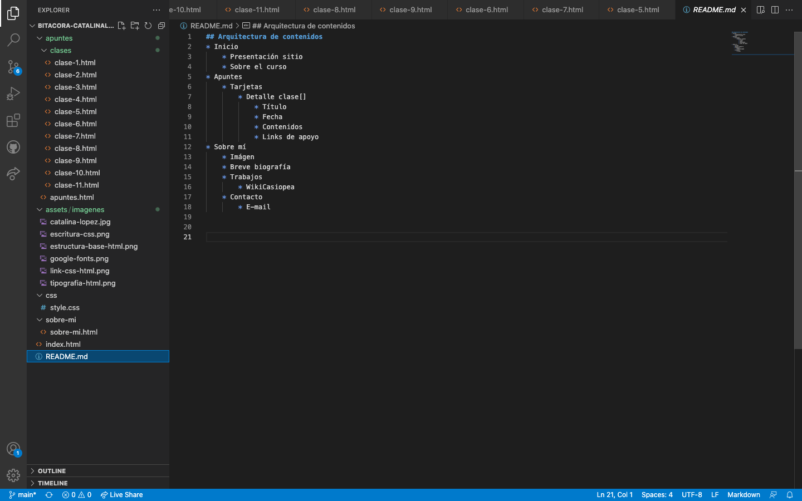

Clase 5: Sesión práctica
Arquitectura del sitio
Es fundamental antes de empezar a codear tener clara la estructura de la web. Se puede dejar registro de ésta en el archivo README.md
Colores con variables
Al principio del archivo CSS se declara en :root {} las variables tipográficas y de color.
Los colores se constituyen en un lista tipo catálogo con un nombre específico y correspondiente código, para luego ser llamadas con var() en el desarrollo de la cascada según corresponda.